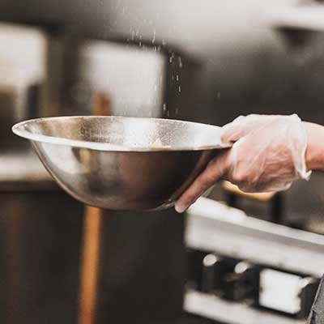
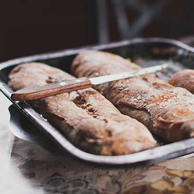
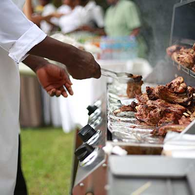
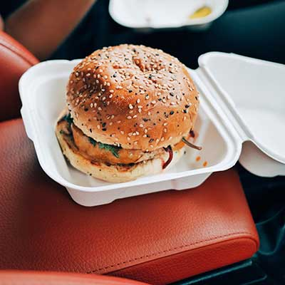
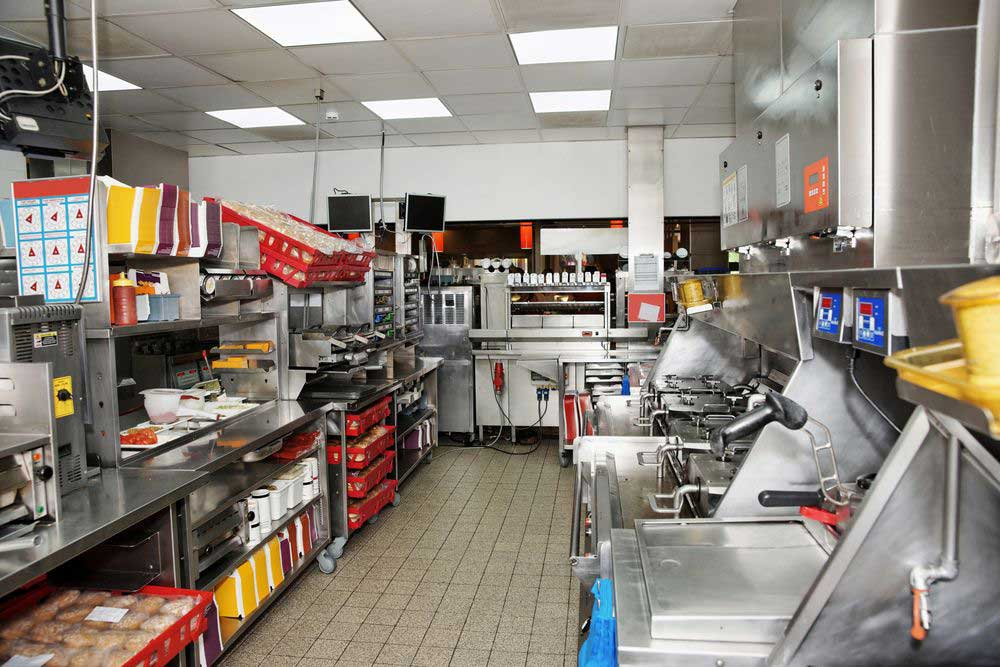
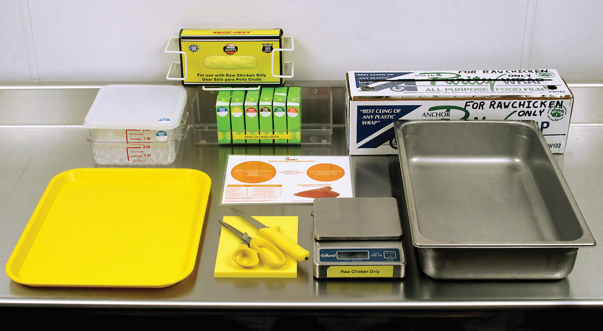
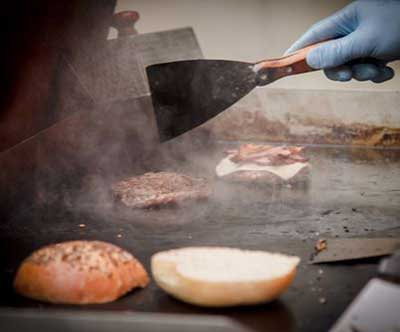

Kitchen Setup
Note: This menu item requires raw chicken storage. Please see raw chicken safety guidelines for more information on thawing, fileting, preparing, and loading meat.
Before you begin assembling sandwiches, be sure to…
- Check quality of filets and verify that they are within holding time.
- Search: Cooking Filets and Holding Unassembled Cooked Breaded Chicken
- Monitor and maintain chicken holding kanbans to ensure that filets and spicy filets are available throughout the lunch and dinner periods.
- When pull kanban is empty or holding time ends, remove that kanban from chicken warming station. Move reserve kanban into pull position to become pull kanban.
- Then place empty kanban at end of refill queue above fryers. When empty kanban reaches front of refill queue, this will signal Breader to prepare a new batch of this product.
- Verify that drained pickles are available in metal pickle bucket with screen insert.
- Butter and toast white buns
- Search: Preparing and Toasting Buns and Wheatberry Bread
| Ingredients | Amounts |
|---|---|
| Hawaiian hamburger-style bun, buttered and toasted | 1 bun |
| Hickory smoked bacon | 3 slices |
| Green leaf lettuce | 1 large leaf |
| Cooked Chicken filet | 1 filet |
| Colby-Jack cheese | 1 slice |
| Honey smokehouse BBQ sauce | 1 dollop |

Clear food service gloves for handling sandwich ingredients

Food tray for assembling sandwiches

Chicken fork for placing filet on sandwich

Paper box for serving sandwich to customers
Grill Team

- A smooth-running grill area ensures that Artemis’ quality characteristics are met consistently.
- Make sure your grill team understands the required food safety and cooking procedures.
- It is crucial that the grill and assembly teams carefully follow the food safety procedures for handling and storing raw chicken and beef patties.
- The grill team should be positioned to produce enough grilled chicken and beef patties to keep the desired product levels in the Universal Holding Cabinet (UHC).
- Proper cabinet level management is critical to a smooth-running restaurant. Depending on your transaction counts, you will want to have as few as one crew member staffing both the grill and fried products areas, or you will have several crew members sharing the work.
- If a product is undercooked, stop immediately, find the cause for the undercooking, and make the necessary changes.


Key Strategies
- Marketing Leads will unwrap and place out all banners, window stickers, and table signs
- Banners will be added to menu board to highlight influence of new BBQ Summer marketing
- Side menu board promos
- New ingredients list for delivery, storage, and assembly
- Promo commercials will begin run on January 17th until February 28th
- Casher promotion mentions
Merchandise Notes
- In order to keep Menuboards updated please use the MKR 143 asset list.
- It is important to keep the new menu signs and BBQ placards on both sides as well as by registers.
- Install Signage in windows before July 15.